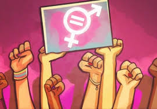

¿Qué es eñ feminismo?
No es lo contrario que el machismo, constituye en una corriente ideológica que pretenda una forma de vivir más equilibrada y justa para hombres y mujeres.
Diccionario ideológico Feminista, 3ND,Ed,Publidisa, Barcelona
